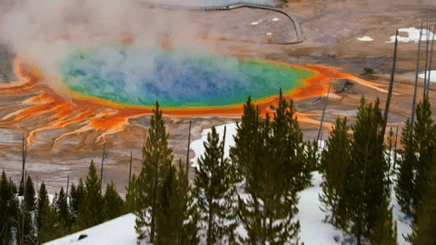
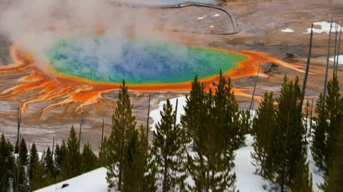

Travel
Yellowstone National Park
 


Each visit to Yellowstone National Park is a breathtaking experience. The moment you lay eyes on the geysers, hot springs, and other thermal wonders within the park, you come to the realization that no photograph or story you've encountered truly captures its magnificence.
Then the allure pulls you back, time and time again!
I've never been inclined to spend a vacation exploring a national park; my preference leaned towards international destinations, particularly Europe, until this year. Yellowstone altered my perspective. I've immersed myself in Yellowstone's wonders on three separate occasions, and my enthusiasm shows no signs of waning. Each visit unveils something new, a continuous revelation that epitomizes the park's vast beauty. Its sheer enormity ensures that returning remains an ever-rewarding experience without the risk of monotony.What fascinates me most about Yellowstone is its location atop a supervolcano. The Caldera, or volcano rim, spans so widely that discerning when you're in it or passing over it becomes a challenge. The volcano's three ancient eruptions, the most recent dating back over 600,000 years, sculpted many of the mesmerizing landscapes you encounter. Still active, the subterranean thermal activity continues to shape the park, giving rise to captivating features like hot springs and geysers.
Best Time to Vist
I highly suggest planning your visit during late summer or early fall. The peak summer months draw the largest crowds, creating a bustling atmosphere that may detract from the overall experience. Additionally, navigating the park in the heat can be less enjoyable. During winter, many of Yellowstone's roads are closed, and the landscape is blanketed in snow, obscuring the vibrant colors of the thermal features. However, if you find yourself returning for a second or third visit, winter presents a unique opportunity. Consider embarking on a snowmobiling or snow coach tour through the park, transforming the familiar landscapes into a breathtaking winter wonderland.
Mount Rainier
Mount Rainier National Park is a breathtaking destination that offers a variety of activities for all ages. The park's namesake, Mount Rainier, is an active volcano encased in over 35 square miles of snow and glacial ice. The mountain's summit reaches 14,410 feet, making it the highest peak in the Cascade Range. The park's vast wilderness encompasses old-growth forests, subalpine meadows, and over 300 miles of hiking trails. The park's diverse ecosystems support a variety of wildlife, including marmots, pikas, mountain goats, and black bears. The park's most famous resident is the Roosevelt elk, which can be spotted in the lowland meadows during the summer months.I have visited the park at least 20 times now, including during my 2017 trip to all the US National Parks. Over the years I have got to know the area fairly well and I’m excited to share my tips with you all!
Best Time to Visit
The best time to visit Mount Rainier National Park is during the summer months. The park is open year-round, but the majority of the park is inaccessible during the winter months. The park is busiest during the summer months, but the weather is the most pleasant. The wildflowers are also in bloom during the summer months, making it the best time to visit. The park is also open during the winter months, but the majority of the park is inaccessible. The park is also open during the spring and fall months, but the weather is less pleasant. The park is also open during the winter months, but the majority of the park is inaccessible.
Grand Canyon National Park
Grand Canyon National Park is one of the most popular national parks in the United States. It is located in Arizona and is one of the Seven Natural Wonders of the World. The Grand Canyon is 277 miles long, up to 18 miles wide, and over a mile deep. The Grand Canyon is a very popular tourist destination, with over 5 million visitors each year. The Grand Canyon is a very popular tourist destination, with over 5 million visitors each year. The Grand Canyon is a very popular tourist destination, with over 5 million visitors each year. The Grand Canyon is a very popular tourist destination, with over 5 million visitors each year. The Grand Canyon is a very popular tourist destination, with over 5 million visitors each year. The Grand Canyon is a very popular tourist destination, with over 5 million visitors each year. The Grand Canyon is a very popular tourist destination, with over 5 million visitors each year. The Grand Canyon is a very popular tourist destination, with over 5 million visitors each year.
What to explore and when
Having explored the Grand Canyon in spring, summer, and winter, my preferred seasons are spring and winter! In spring, the mild temperatures and refreshing, chilly nights enhance the joy and comfort of hiking and camping within the Grand Canyon. While winter doesn't entice me to camp or hike, I am captivated by the stunning spectacle of glistening snow accentuating the vibrant red canyons, all accompanied by the tranquility of fewer visitors.
Some fun stuff to do: South Rim, Visitor Centers, Visitor Center Theater, and Walking or Hiking. Walk the Trail of Time. Activities for Kids. Hermit Road